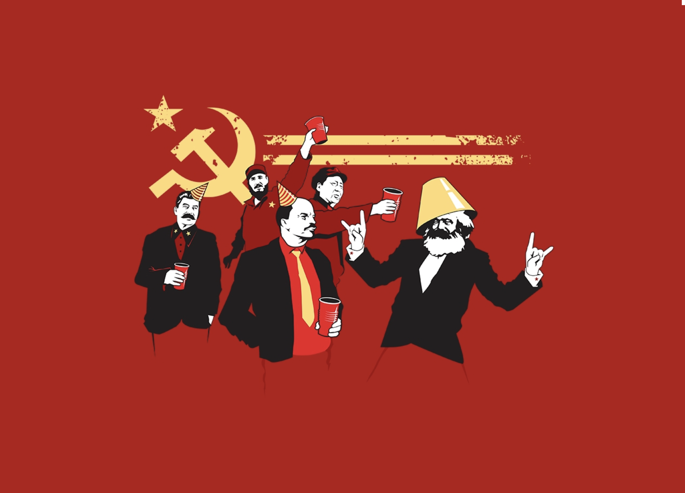

Peace, Bread and Data!

I really like this image by Tom Burns.1 The liberal2 in me appreciates making cheap fun of people who were horribly mistaken (Lenin; Marx, although I don’t mean to slight his contributions to social science), scum like Stalin, and Fidel Castro, who might have started out with a laudable takedown of a corrupt dictator, but who then became…a corrupt dictator, of course. The artist in me just loves the awesome colours. And it’s pretty funny.
So? Well, since I like making plots in R, and I really like these colours, and I have an interest in the political economic side of it all… let’s make some graphs! Maybe we can see how Communist countries compare to the evil West on a series of socio-economic indicators.
The colour scheme in this image is the following:
- background: #cf1f2e
- cup: #d32434
- dark red: #a20414
- very dark red: #991014
- yellow: #ffda85
We can use these hex values directly in the ggplot() function.
This page has a list of former and currently communist countries (no way China is a communist country now, but anyway), and the World Bank data catalog has a whole load of indicators we can use; the ones I use are available from this GitHub repo.3
library(stringr)
library(lubridate)
# this file has a "region" variable that I want:
gini <- read_csv("https://raw.githubusercontent.com/RobertMyles/Various_R-Scripts/master/data/Communist_data/allginis_2013.csv") %>%
select(1, 3)
# but this is the main data file:
wb <- read_csv("https://raw.githubusercontent.com/RobertMyles/Various_R-Scripts/master/data/Communist_data/wb_data.csv") %>%
select(country = 1, 3, 5:14) %>%
filter(!is.na(country))
colnames(wb)[3:12] <- unlist(str_extract_all(colnames(wb)[3:12], "^[0-9\\s]{4}"))
wb <- left_join(wb, gini) %>%
distinct(.keep_all = T)
rm(gini)
# let's arrange it into 'long' format, suitable for showing variation
# over years. I'll also add an indicator variable for communist status:
wb <- wb %>%
select(-`2016`) %>%
gather(year, Value, `2007`:`2015`) %>%
mutate(Value = as.numeric(Value)) %>%
spread(`Series Name`, value = Value) %>%
mutate(year = parse_date_time(year, "Y"),
communist = ifelse(
country %in% current, "Communist",
ifelse(
country %in% former, "Communist", "Evil Kapitalist"))) %>%
select(-14) #NA columnNow we’ve got lots of interesting data to use. Let’s have a look at life expectancy.
ggplot(wb_l, aes(x = year, y = l_means)) +
#annotation straight away to put it behind everything:
annotation_custom(si, xmin = as.numeric(as.POSIXct('2006-01-01',
origin = '1970-01-01')),
xmax = as.numeric(as.POSIXct('2010-01-01',
origin = '1970-01-01')),
ymin = 53, ymax = 64) +
geom_line(aes(group = status, colour = communist), size = 0.8) +
geom_point(aes(colour = communist, shape = region), size = 4) +
theme_classic() +
theme(text = element_text(family = "Kremlin"),
panel.background = element_rect(fill = "#cf1f2e"),
axis.title = element_text(colour = "#991014"),
axis.text = element_text(colour = "#991014")) +
scale_colour_manual(values = c("#ffda85", "black")) +
guides(colour = guide_legend(title = "System")) +
ylab("Life Expectancy")Ah, that font…4
Well, everybody’s life expectancy is going up, that’s good, but there’s a massive difference between communist and non-communist countries in Africa and Asia. Former communist countries do slightly better in Eastern Europe, although it’s pretty much even. That’s quite a notable trend over such a short time period, it’s a pity the data doesn’t go back further. This might also be nice as a boxplot:
Communist countries were/are well-known for having rather large armies. In the data I’ve taken from the World Bank, we have two variables for exploring this theme, Armed forces personnel (% of total labor force) and Military expenditure (% of GDP). Let’s see how they rank:
wb %>% mutate(year = as.character(year)) %>%
filter(year == "2012-01-01", country != "Arab World",
country != "Middle East & North Africa") %>%
select(country, `Military expenditure (% of GDP)`) %>%
arrange(desc(`Military expenditure (% of GDP)`)) %>% head(n = 10)## # A tibble: 10 x 2
## country `Military expenditure (% of GDP)`
## <chr> <dbl>
## 1 Oman 16.1
## 2 South Sudan 9.53
## 3 Saudi Arabia 7.70
## 4 Israel 5.72
## 5 United Arab Emirates 5.09
## 6 Jordan 4.76
## 7 Azerbaijan 4.72
## 8 Yemen, Rep. 4.57
## 9 Algeria 4.46
## 10 United States 4.24Well, look at that. With the exception of the USA, and the less-of-an-exception of Algeria and South Sudan, these are all neighbours. Must be fun over there in the Middle East.
So what about our komrades?
## # A tibble: 10 x 2
## country `Military expenditure (% of GDP)`
## <chr> <dbl>
## 1 Azerbaijan 4.72
## 2 Yemen, Rep. 4.57
## 3 Cuba 3.94
## 4 Angola 3.59
## 5 Armenia 3.58
## 6 Georgia 3.10
## 7 Ukraine 2.35
## 8 Vietnam 2.16
## 9 Serbia 2.10
## 10 Estonia 1.90I’m not sure any of these can be really be classed as communist, perhaps stubborn ol’ Cuba. Perhaps the number of armed forces personnel will live up the stereotype.
There we go! The Democratic People’s Republic of Korea hasn’t let us down in our hunt to confirm what we already want to find. Some surprises in here: Montenegro, Singapore. I’m guessing mandatory military service for makes of a certain age exists in these countries. Or maybe Montenegro really doesn’t like Greece.
And how about GDP? Maybe it’s a bit unfair to compare these, since communism was supposedly against all that filthy wealth generation. But let’s Czech it out. If you’re re-creating these plots, remember that I’m using readPNG() and rasterGrob() to get the images ready for use with annotation_custom().
ggplot(wbg, aes(x = year, y = gdp, colour = communist)) +
annotation_custom(st, xmin = as.numeric(as.POSIXct('2007-01-01',
origin = '1970-01-01')),
xmax = as.numeric(as.POSIXct('2010-01-01',
origin = '1970-01-01')),
ymin = 70000, ymax = 110000) +
geom_line(aes(group = country)) +
theme_classic() +
theme(text = element_text(family = "Kremlin"),
panel.background = element_rect(fill = "#a20414"),
axis.title = element_text(colour = "#991014"),
axis.text = element_text(colour = "#991014")) +
scale_colour_manual(values = c("#ffda85", "black")) +
guides(colour = guide_legend(title = "System"))Unsurprisingly, the communist countries don’t compete well in terms of GDP per capita.
How about other, less financial indicators, like adult literacy levels?
Still the pattern we noticed earlier: while there is a notable difference between communist and non-communist countries inside of regions, the regions themselves vary widely.
East v West Germany: FINAL BATTLE
Anybody who has been paying attention the “credibility revolution” in economics/political science will have seen it said that the ideal for any comparison is an experiment. “Natural” experiments (‘naturally’ occurring, i.e. not created by the researcher) are the closest we can get in many social scientific settings. Luckily for us, this topic has at least one A-grade natural experiment: the division of Germany into East and West, the former under Soviet control and the latter a liberal “capitalist” economy.
For data on the comparison of these two economies, I use this paper, which gives me an excuse to use the pdftools package in R, in order to extract the data out of the pdf.
#library(pdftools)
download.file("https://www.researchgate.net/profile/Pete_Mavrokordatos/publication/296467806_Germany_Twenty_Years_After_The_Union/links/56f13f5508aec9e096b31908/Germany-Twenty-Years-After-The-Union.pdf", destfile = "e_w_germany.pdf", mode = "wb")
e_w <- data_frame(Year = parse_date_time(seq(1980, 1989, 1), "Y"),
East = c(201.9, 206, 205.3, 209.2, 215.2, 221.9,
225, 228.9, 231.3, 234),
West = c(1251.6, 1252.8, 1241.1, 1263, 1298.4, 1325,
1356, 1376, 1427, 1479))de <- readPNG("rmd_images/de.png")
de <- rasterGrob(de, interpolate=T)
wg <- readPNG("rmd_images/wg_eagle.png")
wg <- rasterGrob(wg, interpolate=T)
eg <- readPNG("rmd_images/eg.png")
eg <- rasterGrob(eg, interpolate=T)
# png of eagles
ggplot(e_w, aes(x = Year)) +
theme_classic() +
theme(text = element_text(family = "Kremlin"),
panel.background = element_rect(fill = "black")) +
annotation_custom(de, xmin = -Inf, xmax = Inf,
ymin = -Inf, ymax = Inf) +
annotation_custom(wg,
xmin = as.numeric(as.POSIXct('1987-01-01',
origin = '1970-01-01')),
xmax = as.numeric(as.POSIXct('1989-01-01',
origin = '1970-01-01')),
ymin = 1000, ymax = 1500) +
annotation_custom(eg,
xmin = as.numeric(as.POSIXct('1987-01-01',
origin = '1970-01-01')),
xmax = as.numeric(as.POSIXct('1989-01-01',
origin = '1970-01-01')),
ymin = 100, ymax = 700) +
geom_line(aes(y = East), colour = "#ff0000", size = 1.3, linetype = 2) +
geom_line(aes(y = West), colour = "#ff0000", size = 1.3, linetype = 2) +
ylab("Real GDP for East and West Germany\n Billions hated US dollars")VICTORY TO EVIL WEST!!
As usual, the Economist has some of the best visualizations on the subject. We could recreate this in R, but let’s just use the original. It’s from this article.
Well, one thing that we can be sure about is that the commies cracked some great jokes.
‚ÄúStalin himself cracked them, including this one about a visit from a Georgian delegation: They come, they talk to Stalin, and then they go, heading off down the Kremlin‚Äôs corridors. Stalin starts looking for his pipe. He can‚Äôt find it. He calls in Beria, the dreaded head of his secret police. ‚ÄòGo after the delegation, and find out which one took my pipe,‚Äô he says. Beria scuttles off down the corridor. Five minutes later Stalin finds his pipe under a pile of papers. He calls Beria ‚Äì ‚ÄòLook, I‚Äôve found my pipe.‚Äô ‚ÄòIt‚Äôs too late,‚Äô Beria says, ‚Äòhalf the delegation admitted they took your pipe, and the other half died during questioning.‚Äô üòÑ
Footnotes
“Peace, Bread and Data!” I take from the Bolsheviks’ “Peace, Bread and Land!”.↩︎
In an old-school Scottish sense.↩︎
You can download the data and read it into R, or read directly from the “raw” version of the github page (i.e.,
https://raw.githubusercontent.com/RobertMyles/Various_R-Scripts/). I usereadrfrom thetidyversepackage for this, since it can read straight from an url of a csv withread_csv.↩︎This can be downloaded from many sources, as you can see from the code, it’s called “Kremlin”. I think it’s great.↩︎